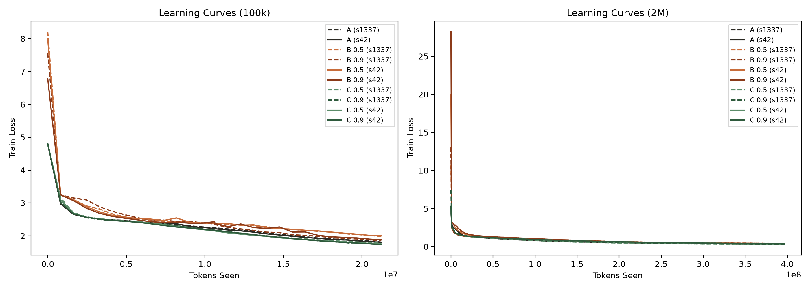
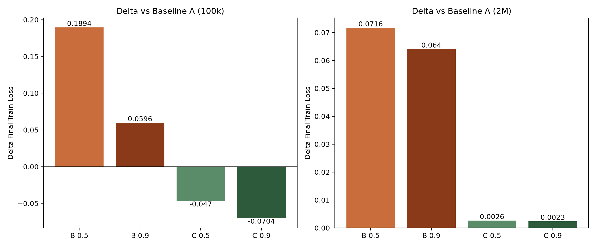
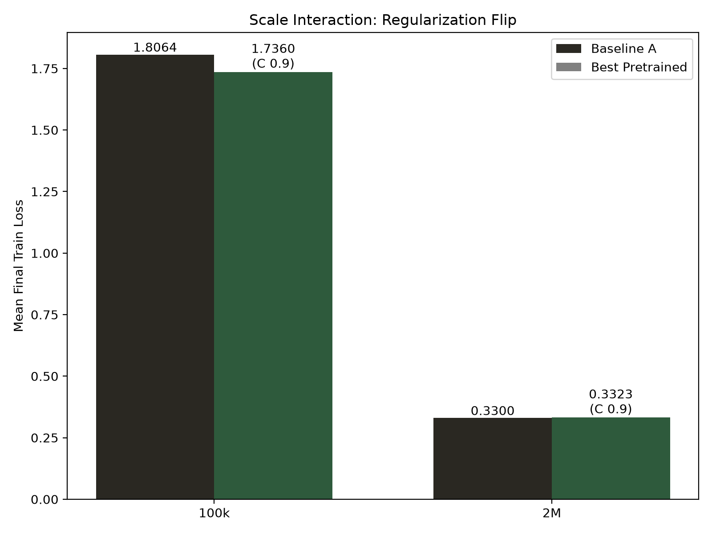
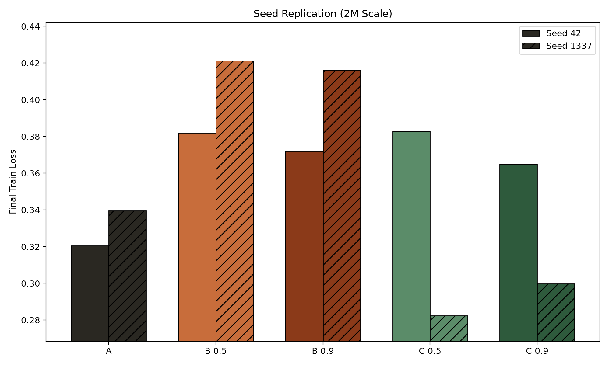
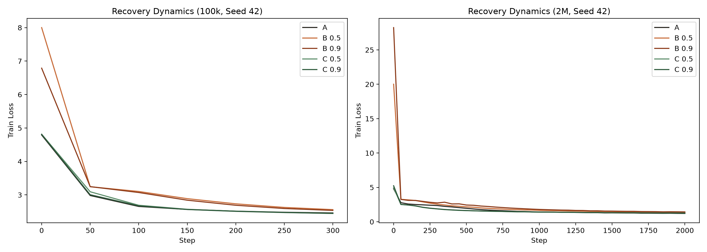
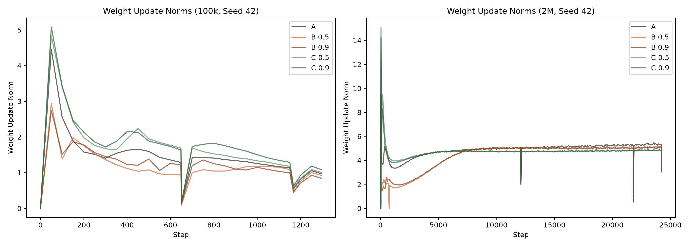
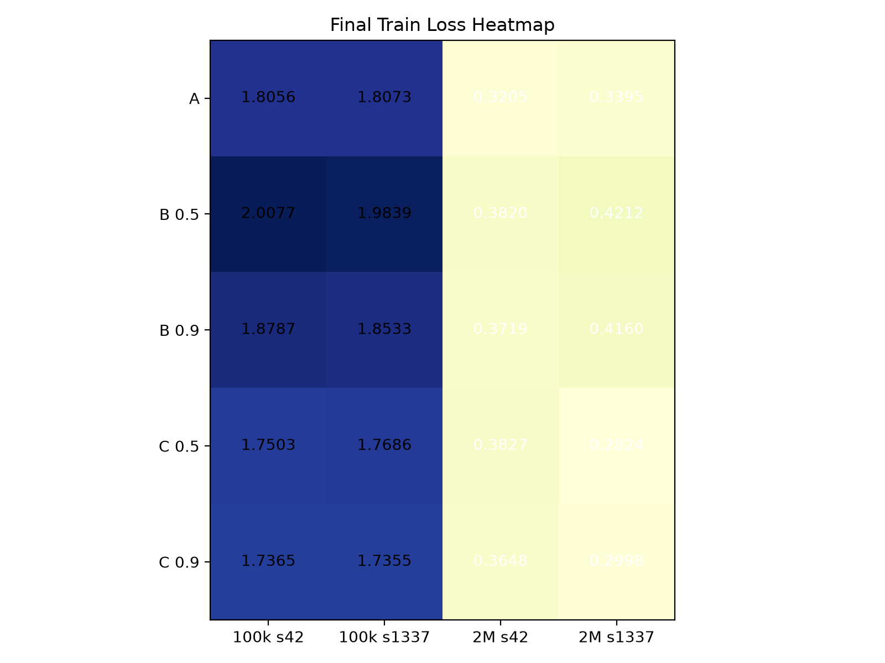

Independent research — pilot study
A pilot study on whether pretraining a small transformer to extreme, fixed-token-budget exposure on one corpus — before training on an unrelated one — changes downstream performance versus training from random initialization.
Status: 28 of 28 runs complete · full matrix finished · last update 2026-07-22
TLDR for reviewers
Rows: 100k seed 42 · 100k seed 1337 · 2M seed 42 · 2M seed 1337. Columns: baseline, pretrain, B frac 0.5, B frac 0.9, C pretrain, C frac 0.5, C frac 0.9.
Training loss is used as the comparison metric throughout. At the 2M scale with 200 tokens per parameter on ~1MB of target text, all conditions overfit substantially (validation loss diverges above 4.0 while training loss falls below 0.4). Training loss reflects how efficiently each condition memorizes the target data under identical compute budgets. At 100k, overfitting is moderate and the pattern is consistent across both metrics.
Final training loss at budget exhaustion (~21.2M tokens, 1,296 steps).
| Condition | Seed 42 | Seed 1337 | Mean | Δ vs A |
|---|---|---|---|---|
| A (baseline) | 1.8056 | 1.8073 | 1.8064 | — |
| B frac 0.5 | 2.0077 | 1.9839 | 1.9958 | +0.189 |
| B frac 0.9 | 1.8787 | 1.8533 | 1.8660 | +0.060 |
| C frac 0.5 | 1.7503 | 1.7686 | 1.7594 | −0.047 |
| C frac 0.9 | 1.7365 | 1.7355 | 1.7360 | −0.070 |
Corpus-pretrained (B) underperformed baseline. Noise-pretrained (C) slightly outperformed baseline. Both patterns replicated across seeds.
Final training loss at budget exhaustion (~396.8M tokens, 24,219 steps).
| Condition | Seed 42 | Seed 1337 | Mean | Δ vs A |
|---|---|---|---|---|
| A (baseline) | 0.3205 | 0.3395 | 0.3300 | — |
| B frac 0.5 | 0.3820 | 0.4212 | 0.4016 | +0.072 |
| B frac 0.9 | 0.3719 | 0.4160 | 0.3940 | +0.064 |
| C frac 0.5 | 0.3827 | 0.2824 | 0.3326 | +0.003 |
| C frac 0.9 | 0.3648 | 0.2998 | 0.3323 | +0.002 |
Corpus-pretrained (B) consistently underperformed baseline across both seeds. Noise-pretrained (C) showed a cross-seed inconsistency: seed 42 underperformed baseline, seed 1337 outperformed it. The mean Condition C delta at 2M is approximately zero.

Fig. 1. Training loss trajectories (finetuning phase) for all conditions. Solid: seed 42. Dashed: seed 1337.

Fig. 2. Final training loss difference relative to baseline (Condition A). Positive = worse. Bars show mean of both seeds at each scale.

Fig. 3. Scale interaction. Noise pretraining (C) slightly outperformed baseline at 100k but showed no robust directional effect at 2M. Corpus pretraining (B) underperformed baseline at both scales.

Fig. 4. Cross-seed comparison at 2M. Condition B replicates consistently. Condition C shows a cross-seed inconsistency: seed 42 underperformed baseline, seed 1337 outperformed it.

Fig. 5. Early finetuning steps (seed 42). All pretrained conditions recover to baseline-comparable loss ranges within ~200 steps (100k) or ~1,000 steps (2M).

Fig. 6. Per-step weight update norm ‖ΔW‖ during finetuning (seed 42).

Fig. 7. Final training loss at budget exhaustion. All 28 runs complete.
Corpus pretraining on structured Arabic text (Condition B) produced consistent negative transfer at both scales and both seeds. The model trained from random initialization reached lower final loss in every case.
Noise pretraining (Condition C) showed a scale-dependent pattern: at 100k, noise-pretrained models slightly outperformed the baseline (consistent across seeds). At 2M, the results were mixed — one seed showed slight harm, the other slight benefit, yielding a near-zero mean effect.
At the 2M scale in seed 42, corpus-pretrained (B) and noise-pretrained (C) conditions converged to similar final loss, both above baseline. This suggested the structured nature of pretraining data was not the relevant variable. However, seed 1337 did not replicate this B ≈ C equivalence, with Condition C reaching substantially lower loss than Condition B.
Deeper pretraining (frac 0.9 vs 0.5) consistently produced slightly lower final loss, despite identical finetuning budgets. This held across both conditions and both seeds.
Scale and power. Models are 106k–1.98M parameters, character-level tokenization, n=2 seeds. This is sufficient for directional consistency checks but not for formal statistical significance claims. Results may not generalize to larger scales or subword tokenization.
Corpus discontinuity. Seeds 42 and 1337 use different underlying text for Condition B pretraining (original Arabic text vs. Arabic Wikipedia replacement). Conditions A and C are true replicates across seeds. See data_glossary.md.
Checkpoint regeneration. The noise pretraining checkpoint for seed 1337 (Condition C) was lost during a repository restructuring and was regenerated using the same seed and configuration. Although deterministic seeding was used, GPU non-determinism means the regenerated checkpoint may differ from the original. The seed-1337 Condition C results (which show lower final loss than baseline, unlike seed 42) should be interpreted with this confound in mind.
Exploratory pilot. This is a pilot study: a pattern here is a reason to investigate further, not a finding on its own. Every metric and checkpoint is published as collected, including null or inconsistent results.
methodology.md — Full experimental design, architecture, hyperparameters, metric selection
results.md — Complete results tables, cross-seed analysis, checkpoint fraction effects, all caveats
data_glossary.md — Corpus definitions, known discontinuities across seeds
Code, data, and full telemetry: github.com/mohamedhossammohamed/overfit-init-transfer